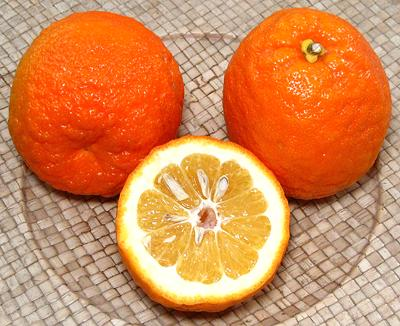

Bitter Orange

[Sour Orange, Seville Orange, Bigarade; Citrus aurantium]
A native of Southeast Asia, this was the only type of orange known in
Europe until after 1500, and now grows cultivated or wild in most
subtropical areas of the world. Many are grown in Andalusia, Spain,
for shipment to England and Scotland for the manufacture of marmalade.
Peel and oil also find extensive use in flavorings for liquors,
candies and the like. It is a popular herbal remedy, said to provide
a "safe" form of Ephedrine, but this safety is not medically proven.
They tend to be quite seedy, and a bit low in juice.
The most available variety in the U.S. and Europe is the Seville
Orange which has a lumpy rind and very tart flesh. It's less sour than
a lemon and has a distinctly orangy flavor, but it isn't something
most people would want to eat out of hand. The photo specimens were
about 3-1/4 inch diameter and weighted 7-3/4 ounces each, but they can
be quite a bit smaller or larger. These were purchased
from a multi-ethnic market in Los Angeles at 2015 US $0.99 / pound.
More on Citrus.
Buying:
Bitter / Sour Oranges are available in
Florida, and becoming more available in ethnic produce markets in
Southern California. They are very popular in southern Mexico,
where their main use is for the juice, used in sauces and marinades.
Storing:
Keep cool as with other citrus.
Cooking:
Sour orange is used in many marinade recipes,
and in Florida for making pies. This type of orange is needed for
marmalades, for its high pectin content and the interesting flavor of
its peel.
Juice Yield:
These oranges are fairly dry. 2 pounds
of oranges yielded a thin shade over 1 cup of juice.
Substitute:
Substitutes don't work well for pies and
marmalades becaue the high pectin content of the bitter orange will
not be available. For other uses, here are three suggested substitutes:
- 1/2 cup Orange Juice + 1/4 cup each Lemon Juice and Lime Juice.
- 1/2 cup Grapefruit Juice, 1/4 cup Orange Juice and 3 Tablespoons
Lime Juice.
- 1/2 cup Orange Juice + 1/2 cup Lemon Juice.
A similar mix of grated peels can be used for grated Bitter Orange
peel.
ci_osourz 070222 r 150210 - www.clovegarden.com
©Andrew Grygus - agryg@clovegarden.com - Photos
on this page not otherwise credited © cg1
- Linking to and non-commercial use of this page permitted